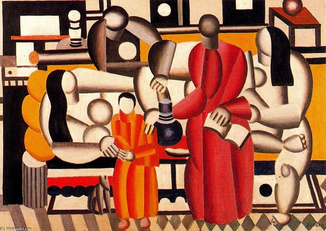

The Art Times
Your Leading Source of Art Coverage

By Kiki Olmedo | 4th February 2017

The French artist Fernand Léger’s name might not be the first that comes to mind when thinking about Cubists or Dadaists, yet he was a central figure in exploring the boundaries of these movements throughout his fruitful and ever-evolving practice. His fresh approach made it possible for him to become a bridge between what was going on in his time and what was about to come.
Léger was brought up in a hard-working and unpretentious household. The son of a cattle dealer from rural Normandy, he was born on February 4, 1881, and was expected to follow in his father’s footsteps. Nevertheless, his father supported his son’s passion for the arts when the young Léger showed talent for drawing. The artist accepted an apprenticeship under an architect in Caen and continued his studies in Paris at the Ecole des Arts Décoratifs and Académie Julian.
The capital city had a big impact on Léger, who turned his attention towards abstraction and adopted elements of Cubism into his work, transforming them and constructing his own take on the movement—without ever rejecting figuration or three-dimensionality entirely. He mainly used vivid primary colors, which captured the vibrancy of Paris, its modern people, and its machinery.
By 1913, he was already represented by Daniel-Henry Kahnweiler, alongside Pablo Picasso and Georges Braque. Léger’s unique “tubism” style would become his trademark, and his influence would stretch to the graphic arts and advertising after World War II.
He was also a pioneer in experimental film, collaborating with Dudley Murphy in Ballet Mécanique. Léger’s work often flirted with the dichotomy between chaos and order, echoing the modern man and his surroundings.
Always willing to try new things, Léger experimented with other media with renewed curiosity. These included book illustrations and theater set design. Later in life, he even expanded his practice to include tapestry, pottery, stained glass, and mosaics.
With Léger’s visionary eclecticism in mind, here are 5 quotes to celebrate his birthday:
1. On modern life
“Modern man lives more and more in a preponderantly geometric order. All human creation mechanical or industrial is dependent upon geometric intentions.”
2. On color
“Man needs color to live; it’s just as necessary an element as fire and water.”
3. On the love of art
“Above all, it is a matter of loving art, not understanding it.”
4. On creating a composition
“I organize the opposition between colors, lines and curves. I set curves against straight lines, patches of color against plastic forms, pure colors against subtly nuanced shades of gray.”
5. On expression
“If pictorial expression has changed, it is because modern life has necessitated it.”
FIRST PUBLISHED ON 4th FEBRUARY, 2017
Courtesy of artnet.com